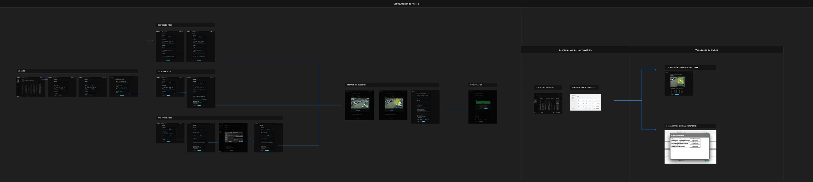
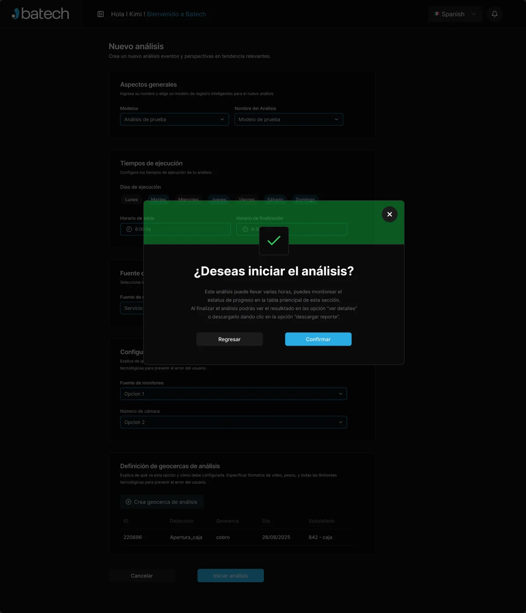
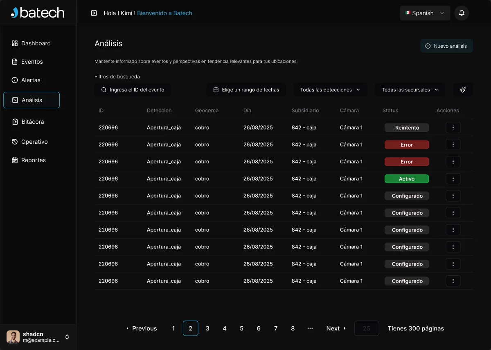
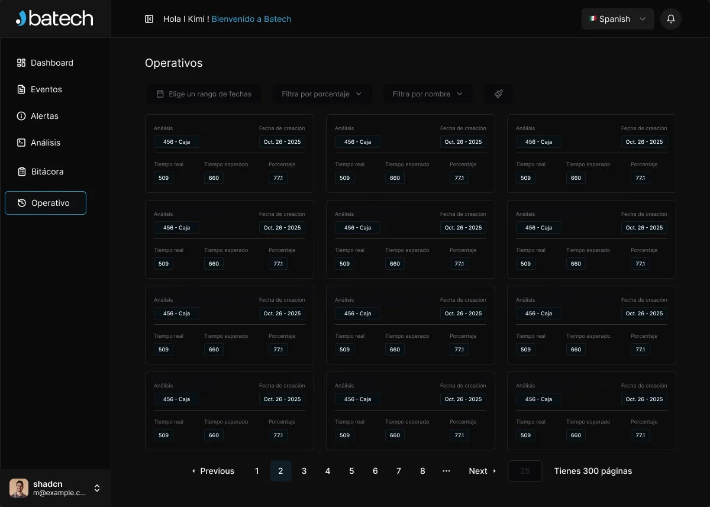
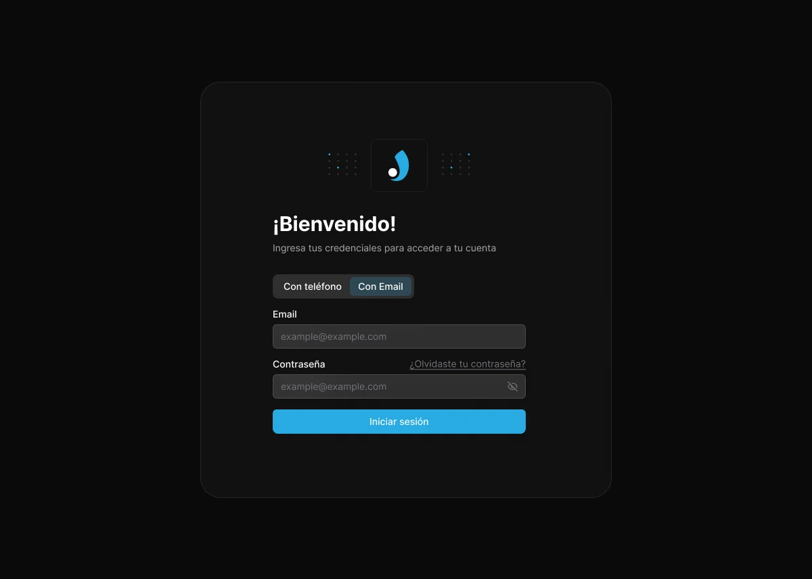

Batech AI Platform
A computer-vision platform that turns store cameras into events, alerts and reports. I led its design end to end, from the first flow to a high-fidelity prototype.Una plataforma de visión artificial que convierte las cámaras de cada tienda en eventos, alertas y reportes. Lideré su diseño de punta a punta, del primer flujo al prototipo de alta fidelidad.

AI that watches the store, and a place to read what it saw.Una IA que mira la tienda, y un lugar para leer lo que vio.
Batech builds artificial intelligence for physical retail. Its models watch the cameras of every branch and detect events, such as a cash drawer opening at the till. The platform is where operations teams follow those detections, configure new analyses and download the results.Batech desarrolla inteligencia artificial para el retail físico. Sus modelos miran las cámaras de cada sucursal y detectan eventos, como la apertura de una caja. La plataforma es donde los equipos de operaciones siguen esas detecciones, configuran nuevos análisis y descargan los resultados.
I led the design of the platform from the first idea to launch: research and testing, flows and navigation, the interface and the component library in Figma. I also led the design team, which delivered 10% faster over the project.Lideré el diseño de la plataforma desde la primera idea hasta el lanzamiento: research y testing, flujos y navegación, la interfaz y la librería de componentes en Figma. También lideré al equipo de diseño, que entregó un 10% más rápido a lo largo del proyecto.
A technical setup that has to feel like a form.Una configuración técnica que tiene que sentirse como un formulario.
Video analytics is full of concepts that are hard to explain: models, camera sources, RTSP links, geofences, execution schedules. And the people configuring an analysis shouldn’t need to be engineers.El análisis de video está lleno de conceptos difíciles de explicar: modelos, fuentes de cámara, links RTSP, geocercas, horarios de ejecución. Y quien configura un análisis no debería necesitar ser ingeniero.
At the same time the platform produces a lot of data: hundreds of pages of detections, each tied to a camera, a branch and a video that may or may not be processed yet.Al mismo tiempo, la plataforma genera muchísimos datos: cientos de páginas de detecciones, cada una atada a una cámara, una sucursal y un video que puede estar procesado o no.
Make the setup read like a form, and make hundreds of detections easy to scan.Que la configuración se lea como un formulario, y que cientos de detecciones se puedan escanear de un vistazo.
Seven sections, each answering one question.Siete secciones, cada una responde una pregunta.
The dashboard above opens the platform: three numbers up top and the live analytics panel below, with the seven sections always one click away in the sidebar.El dashboard de arriba abre la plataforma: tres números arriba y el panel de analítica en vivo debajo, con las siete secciones siempre a un clic en la barra lateral.
From camera to report in six steps.De la cámara al reporte en seis pasos.

- 01
Choose the sourceElegir la fuente
A video service, an RTSP link or an uploaded video file. Three branches that converge in the same form.Un servicio de video, un link RTSP o un archivo subido. Tres caminos que llegan al mismo formulario.
- 02
Name it and pick a modelNombrarlo y elegir el modelo
General aspects first: the detection model and a name the team will recognise later.Primero lo general: el modelo de detección y un nombre que el equipo reconozca después.
- 03
Schedule itProgramarlo
Execution days as chips from Monday to Sunday, plus a start and end time.Los días de ejecución como chips de lunes a domingo, más una hora de inicio y de fin.
- 04
Draw the geofenceDibujar la geocerca
On a frame of the camera, the user outlines the area to analyze with the cursor and names it.Sobre un cuadro de la cámara, se marca con el cursor el área a analizar y se le pone nombre.
- 05
ConfirmConfirmar
A dialog warns that the analysis can take hours, and says where to follow its progress and download the report.Un diálogo avisa que el análisis puede tardar horas y dice dónde seguir su progreso y descargar el reporte.
- 06
Read the resultVer el resultado
The geofence over the frame, the detections in a table and one button to download.La geocerca sobre el cuadro, las detecciones en una tabla y un botón para descargar.



Hundreds of pages, scannable at a glance.Cientos de páginas, legibles de un vistazo.
Events as cards with the frameEventos como tarjetas con el cuadro
- The camera frame leads,El cuadro de la cámara va primero, so people recognise the scene before they read the ID.así se reconoce la escena antes de leer el ID.
- Four filtersCuatro filtros above the grid: event ID, date range, detection type and branch.sobre la grilla: ID del evento, rango de fechas, tipo de detección y sucursal.
- Video state in colour:El estado del video en color: a red bar when the video is not processed yet, a blue button when it can be watched.una barra roja cuando el video todavía no se procesó, un botón azul cuando ya se puede ver.
- Pagination with jump-to-page,Paginación con salto a página, because there can be 300 pages.porque puede haber 300 páginas.

Analyses and operational timesAnálisis y tiempos operativos
The analysis table puts status last and in colour (retry, error, active, configured) so problems stand out in a long list. The operational view compares real time against expected time for each analysis and turns it into a percentage.La tabla de análisis pone el estado al final y en color (reintento, error, activo, configurado) para que los problemas resalten en una lista larga. La vista operativa compara el tiempo real contra el esperado de cada análisis y lo convierte en un porcentaje.


Ask the platform instead of building a report.Preguntarle a la plataforma en vez de armar un reporte.
An assistant opens in a side panel over any screen. It opens with suggested questions, such as the most visited branch, the most recurrent event or the conversion rate, and accepts text, attachments and voice.Un asistente se abre en un panel lateral sobre cualquier pantalla. Arranca con preguntas sugeridas, como la sucursal más visitada, el evento más recurrente o la tasa de conversión, y acepta texto, adjuntos y voz.

One dark system, from the login in.Un sistema oscuro, desde el login.
Sign-in works with a phone or an email, switched with a segmented control. Every screen is built from the same Figma library (sidebar, filters, cards, tables, dialogs and pagination) on a dark theme with the brand’s cyan as the accent.El ingreso funciona con teléfono o con email, que se cambian con un control segmentado. Cada pantalla sale de la misma librería de Figma (barra lateral, filtros, tarjetas, tablas, diálogos y paginación) sobre un tema oscuro con el cian de la marca como acento.

One place to set up, follow and share every analysis.Un solo lugar para configurar, seguir y compartir cada análisis.
Alongside the platform I revamped Batech’s web and mobile interfaces with analytics and A/B testing to simplify key flows and reduce abandonment, and kept the design system in Figma consistent across both.Además de la plataforma, rediseñé las interfaces web y mobile de Batech con analytics y A/B testing para simplificar flujos clave y bajar el abandono, y mantuve el design system en Figma consistente entre ambas.